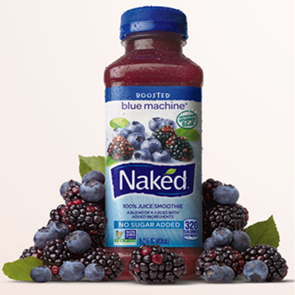
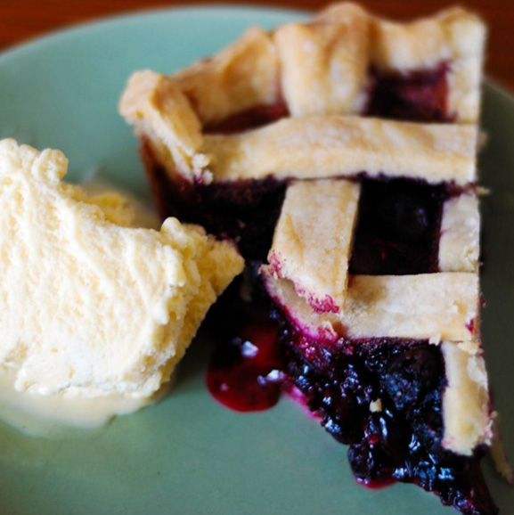
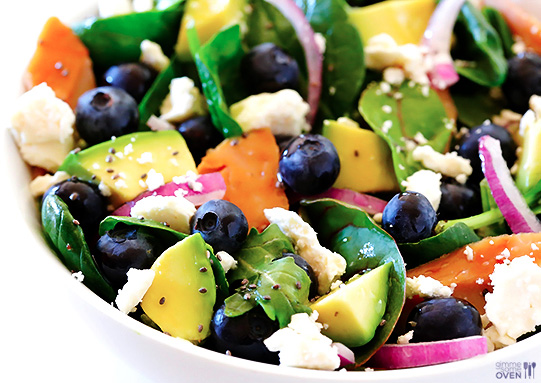

Related Articles
There are so many different recipes that contains Blueberries. There is no way I can forget to mention the Brain Power Salad that is so famous. Very simple to make and enjoy for lunch. Naked juice are the true pioneers in making maintaing the natural taste of berries. Even though the famous blue machine is mixed with different berries, it remains a power drink
 The Blue Machine. Enjoy The Berry Taste.PLEASE CLICK ON THE LINK - The Most Delicious Super Fruit Drink
 Tasty Blueberry Pie Recibe.PLEASE CLICK ON THE LINK - Delicious Blueberry Pie Recipe
 Power Brain Salad Recipe.PLEASE CLICK ON THE LINK - Amazing Blueberry Salad
Enjoy the journey towards better health. There are many other recipes on how to prepare Blueberries, but these are truly my favorite. Enjoy and now go find some purple gems.